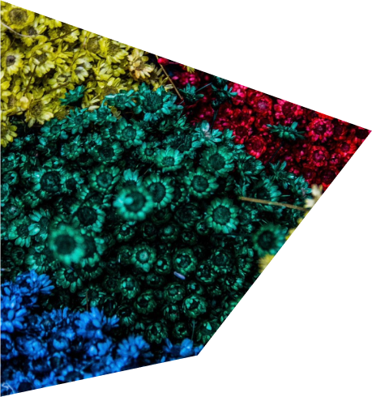

花ノ刺激展
Start from2023,03,13
蜷川ユナが贈る花の刺激展
彼女が求め続けた
花の刺激が体感できる
Start from 2023,03,13~2023,05,29
GALLERY
- 淫羊藿
 姥百合
姥百合- 紫茉莉
- 黄花龍芽
- 雀日将花
- 擬宝珠
- 九里香
- 紫雲英
ACCESS
PARK SIDE HALL
Adress: 〒110-0007東京都台東区上野公園8-36
Open: 9:30～17:30（入館は17:00まで）
Close: 第1・3月曜日（祝日・振替休日の場合は翌日）
【WEBインタラクションデザイン専攻 制作発表】
— 東京デザインプレックス研究所 (@official_tdp) February 22, 2023
昼間部1年制WEBインタラクションデザイン専攻のモバイルアプリ制作の課題発表を実施。
多くの工程を踏んで形になった作品の数々。真剣な眼差しで発表している学生の姿が印象的でした。 pic.twitter.com/fTTu2qQ1y8
CONTACT
- Name
- Contents